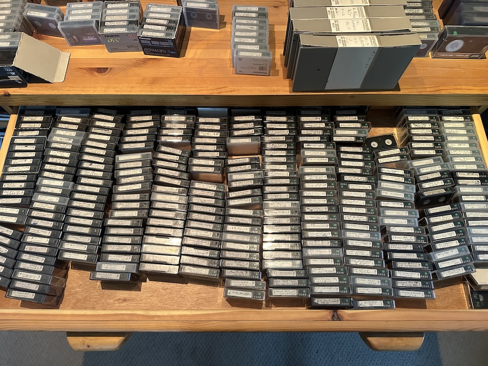
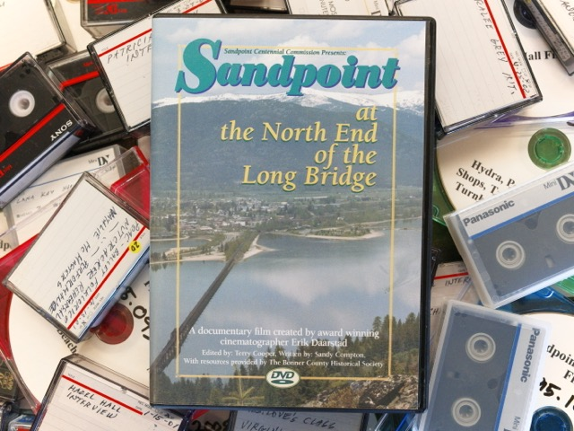

/// ARCHIVING
"I’LL SEE YOU AGAIN IN 25 YEARS."
Projects
-
The Cooper Collection
[ in development ]
A North Idaho filmmaker has a massive collection of tapes -- 7000 hours of footage shot for local television programming. The footage spans several decades (80s to the 10s) and exists in several formats: VHS, S-VHS, VHS-C miniDV, HDV, DVCAM, and DVD. We're working to secure funding and get this massive digitization project underway.
-
The Sandpoint Centennial Film
[ 2025.12 - 2026.08]
Successfully transferred about 200 hours of miniDV footage and interviews. These materials were shot by Erik Daarstad in the early 2000s for a documentary celebrating the centennial of Sandpoint, Idaho.